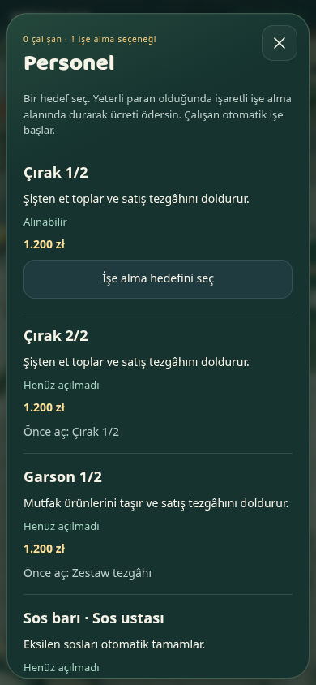
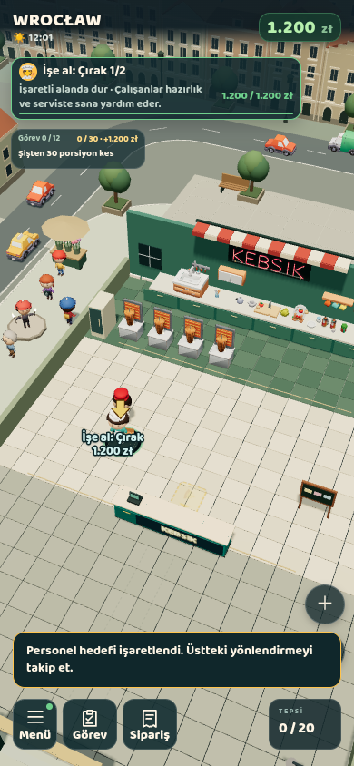
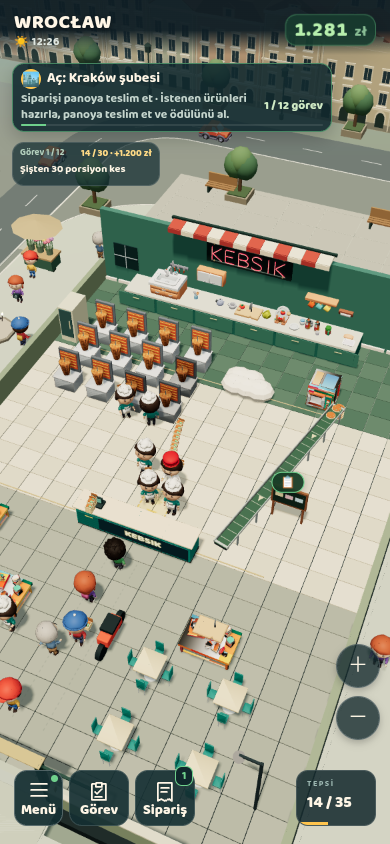

Kebsik Mini — personel güncellemesi
0.1.60 test adayı. Menü → Personel → İşe alma hedefini seç. Hedef seçmek para harcamaz; işaretli alanda durarak işe alırsın. Görsele dokunarak tam boy açabilirsin.






Gerçek C# oyunundan alınan tarayıcı test ekranlarıdır; fiziksel telefon çekimi değildir. Kasiyer karesi geliştirilmiş dükkân test kaydından alınmıştır. Görseller değiştirilmemiştir.
Rakip araştırmasından uygulanan dersler: görevleri ayırmak, işe alma ücretini ve ön koşulunu göstermek, işe başlamayı görünür kılmak. Kamuya açık açıklamalar ve oyun rehberleri incelendi; özel kaynak kodları incelenmedi.